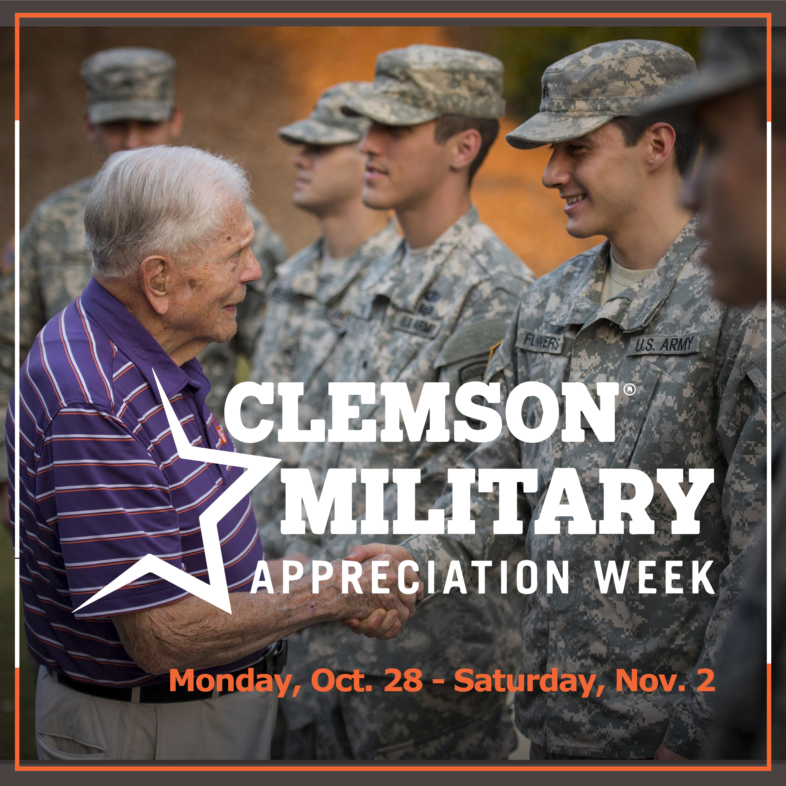
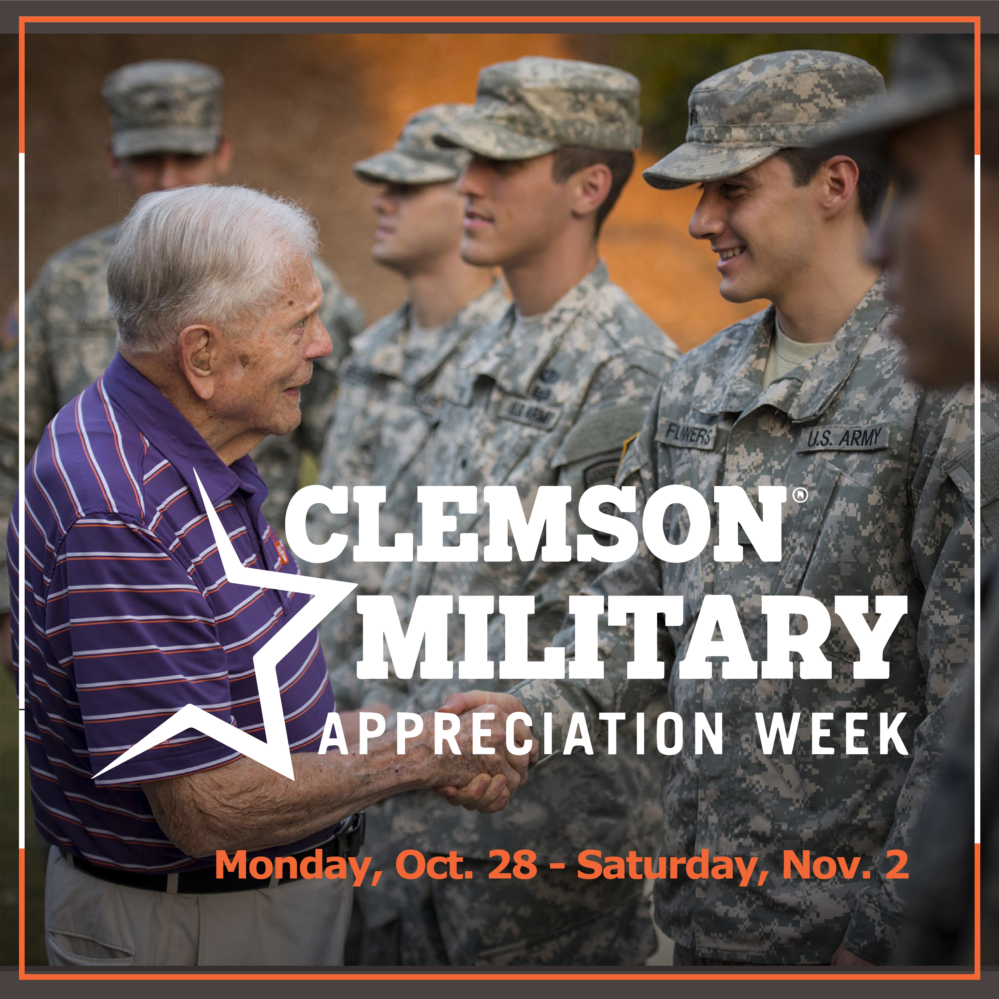

Gunnin Library


 

My position as digital media intern for the Emery A. Gunnin Architecture Library showcases my ability to manufacture compelling graphics and legibly communicate information while remaining on brand.


Graphic backgrounds for Instagram stories

Mouth of the South Logo Design
This is a logo design for a catering company in Aiken, SC, looking to rebrand. To the left are several possible iterations from earlier in the design process.
Sargent Sanitizing Logo
This is a logo design for a Greenville-based extermination company that was looking for a new logo as they branched into sanitization. There were many more iterations than pictured before arriving at a satisfying product.


Huntsman Liquors Branding

Recipe Cards
This branding project entailed designing the brand colors, logo, and promotional materials (recipe cards, shirts) for Huntsman Liquors in Aiken, SC.